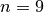

3.5. Some global statistics about the search and how to limit the search
In the section Objective functions and how to compare search strategies, we talked about some global statistics about the search. In this section we review them one by one.
3.5.1. Time
This is probably the most common statistic. There exist several timing libraries or tools to measure the duration of an algorithm. The or-tools library offers a basic portable timer. This timer starts to measure the time from the creation of the solver.
solver("TicTac") s; // Starts the timer of the solver.
If you need the elapsed time since the creation of the solver, just call wall_time():
const int64 elapsed_time = s.wall_time();
The time is given in milliseconds. If you only want to measure the time spent to solve the problem, just subtract times:
const int64 time1 = s.wall_time();
s.Solve(...);
const int64 time2 = s.wall_time();
LOG(INFO) << "The Solve method took " << (time2 - time1)/1000.0 <<
" seconds";
As its name implies, the time measured is the wall time, i.e. it is the difference between the finishing time of a task and its starting time and not the actual time spent by the computer to solve a problem.
For instance, on our computer, the program in golomb1.cc for  takes
Time: 4,773 seconds
3.5.2. Failures
A failure occurs whenever the solver has to backtrack whether it is because of a real failure, a success or because the search is restarted or continued. There are two main statistics about failures that you can retrieve like so:
Solver s("Global statistics");
LOG(INFO) << "Failures: " << s.failures() << std::endl;
LOG(INFO) << "Fail stamps: " << s.fail_stamp() << std::endl;
failures() returns the number of leaves in the search tree. This is exactly the number of time the solver has to backtrack whenever it doesn’t find a solution or it does find a solution. Indeed, whenever a solution is found, the corresponding branch of the tree doesn’t need to grow any further and the solver needs to backtrack to other branches to find other solutions.
fail_stamp() adds the failures counted by failures() with some additional internal ones. These failures are specific to our algorithm and are not really important at this stage.
3.5.3. Branches
This one is easy as branches() returns exactly the number of branches in the search tree:
Solver s("I count my branches");
LOG(INFO) << "Branches: " << s.branches() << std::endl;
3.5.4. SearchLimits
When you try to solve a difficult problem, it might happen that the solver runs for a long time without finding a solution or a good enough solution. In such cases, you might want to limit the behaviour of the solver. Some other statistics can be bounded during the search.
The class SearchLimit permits to limit
- the time;
- the number of visited branches;
- the number of failures;
- the number of solutions found;
- another stopping criteria you define yourself.
You can limit these statistics for the whole search or for each sub-search where the solver tries to find the next feasible solution.
If you are only interested in limiting one of these statistics, individual methods are provided:
SearchLimit* Solver::MakeTimeLimit(int64 time);
SearchLimit* Solver::MakeBranchesLimit(int64 branches);
SearchLimit* Solver::MakeFailuresLimit(int64 failures);
SearchLimit* Solver::MakeSolutionsLimit(int64 solutions);
These methods only apply to the individual sub-searches and each time a sub-search is started, counters are set to 0 again.
As SearchLimits are SearchMonitors, you can pass them as arguments to the solver’s NewSearch() or Solve() methods:
Solver s("Don't want to fail too much");
...
SearchLimit * const fail_limit = s.MakeFailuresLimit(3);
DecisionBuilder * const db = s.MakePhase(...);
...
s.Solve(db, fail_limit, ...);
If you want to limit some statistics for the whole search, you can use the following method:
SearchLimit* Solver::MakeLimit(int64 time,
int64 branches,
int64 failures,
int64 solutions,
bool smart_time_check,
bool cumulative);
Setting smart_time_check to true entails that, for a certain number of calls, the real time limit will not be tested[1]. This is done to avoid the costly call to wall_time(). If you want the statistics to be tested globally, set cumulative to true. If you don’t want to impose a limit say on the number of failures, pass the maximum number of failures (kint64max).
These limits are tested[2] in SearchMonitor‘s BeginNextDecision() and RefuteDecision() methods. You’ll learn about these two methods (and a bunch of others) in the section The basic search algorithm and the callback hooks for the SearchMonitors.
These are the logical places to test for the number of branches, failures and solutions but it is good to know if you want to implement your own custom limit.
SearchLimits can be combined:
Solver s("I combine my limits");
...
SearchLimit * const limit1 = s.MakeLimit(...);
SearchLimit * const limit2 = s.MakeLimit(...);
SearchLimit * const ORLimit = s.MakeLimit(limit1, limit2);
The ORLimit is reached when either of the underlying SearchLimit limit1 or limit2 is reached.
You also can implement your own SearchLimit with a callback:
SearchLimit* MakeCustomLimit(ResultCallback<bool>* limiter);
The ResultCallback<bool> is a functor that implements the Run() method returning a bool. Returning true means the limit is reached. See the section Callbacks for more on callbacks and functors.
Warning
If the Run() method returns true at a leaf of the search tree, the corresponding solution will be rejected!
In the subsection Can we do better? about solving the job-shop problem with local search, we will construct our own SearchLimit.
SearchLimits can also be updated during the search using the following method:
void Solver::UpdateLimits(int64 time,
int64 branches,
int64 failures,
int64 solutions,
SearchLimit* limit);
Footnotes
| [1] | See the method RegularLimit::TimeDelta() in file search.cc if you want to know the details. |
| [2] | To be precise, some limits are tested elsewhere in the search algorithm depending on the type of search. |
Google or-tools |
User's Manual
Google search
Welcome
Tutorial examples
Current chapter
3. Using objectives in constraint programming: the Golomb Ruler Problem
Previous section
3.4. What model did I pass to the solver?
Next section
3.6. A second model and its implementation